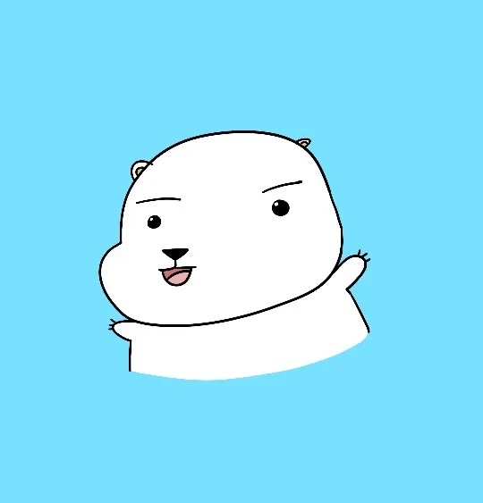
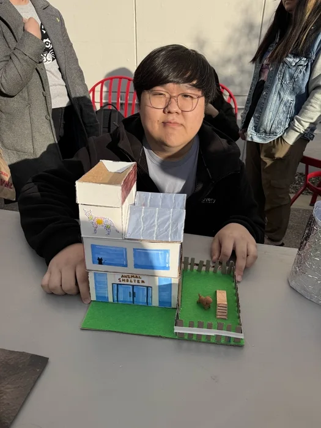

DES 117 · WEB / INTERACTION · COURSEWORK
Interactive Narrative
A multi-page personal storytelling website tracing a design journey, with navigation to selected coursework.

01 / STORY
Presenting a design journey
The authored website introduces the designer and organizes sections for About Me and Portfolio. The project connects an individual story to coursework including DES 001, DES 014, DES 015 and DES 016.
02 / REFINEMENT
Hierarchy, contrast and navigation
The submitted progress notes describe changes from a black header with yellow text to a purple header with white text, and revised title and navigation sizes. Section boxes were used to divide long pages into more readable blocks.

PROJECT MATERIALS